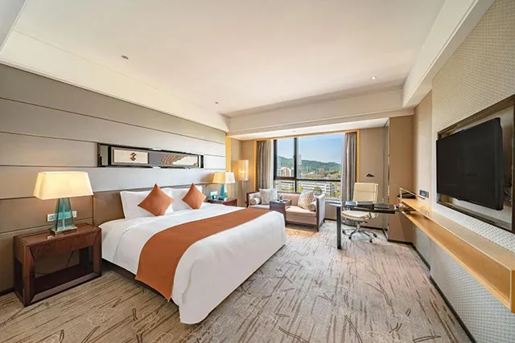
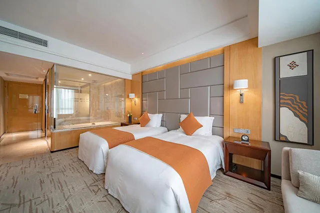
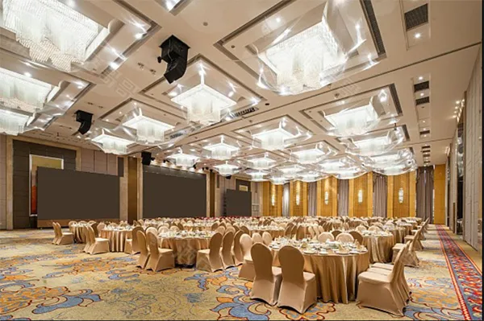

Swissôtel Guangzhou is located in the Software Park, central to Tianhe Intelligence City(IBD). The hotel has 364 rooms with a modern Oriental style. With All-day dining , Chinese and Japanese Restaurant.Moreover, it has an outdoor swimming pool, a well-equipped fitness center and a 15,000sqm outdoor garden. At Swissôtel, we want you to live life well by encouraging you to live in the moment.

Classic Room 1
1 King Size Bed

Classic Room 2
2 Single Size Beds

Venue
Manestage
1000m²+
Map and Navigation
2026 CSBC Southern China Brony Carnival (July 18-19) will be held at Guangzhou Swissotel, located at No. 1961 Huaguan Road, Tianhe District, Guangzhou City, Guangdong Province.
For attendees heading to the venue, please get off at Tianhe Smart City Station on Guangzhou Metro Line 21. During operating hours, you can take the Brony Bus.
It is approximately 1.1 km (about a 17-minute walk) from the metro station to the venue. Alternatively, you may take Bus B26 or Bus 491 for one stop to reduce walking distance.
Arriving at Guangzhou Baiyun International Airport
T1 / T2 Arrivals
Take Metro【Line 3】(towards Tiyu Xilu / Haibang) to Guangzhou East Railway Station, transfer to【Line 11】(Inner Circle) to Tianhe Park Station, then transfer to【Line 21】(towards Zengcheng Square) to Tianhe Smart City Station. 【3-11-21】 Approximately 1 hour 8 minutes.
Take the【Guangzhou East Ring Intercity Railway】to Pazhou Station, transfer to Metro【Line 11】(Outer Circle) to Tianhe Park Station, then transfer to【Line 21】(towards Zengcheng Square) to Tianhe Smart City Station.
Take the【Guangzhou East Ring Intercity Railway】to Longdong Station, then take【Bus 494】to Tianhe Software Park Management Committee Station, and walk to the venue.
Take the【Guangzhou East Ring Intercity Railway】to Cencun Station, then take【Bus B4A】to Huaguan Road East Station, and walk to the venue
T3 Arrivals
Take the airport free【Shuttle Bus】to T1 / T2 terminals, then transfer to the metro. Take【Line 3】(towards Tiyu Xilu / Haibang) to Guangzhou East Railway Station, transfer to【Line 11】(Inner Circle) to Tianhe Park Station, then transfer to【Line 21】(towards Zengcheng Square) to Tianhe Smart City Station. 【3-11-21】
Take【Bus Konggang Line 2 Branch】to Gaozeng Metro Station, then transfer to the metro. Take【Line 3】(towards Tiyu Xilu / Haibang) to Guangzhou East Railway Station, transfer to【Line 11】(Inner Circle) to Tianhe Park Station, then transfer to【Line 21】(towards Zengcheng Square) to Tianhe Smart City Station. 【3-11-21】
Take the【Guangzhou East Ring Intercity Railway】to Pazhou Station, transfer to Metro【Line 11】(Outer Circle) to Tianhe Park Station, then transfer to【Line 21】(towards Zengcheng Square) to Tianhe Smart City Station.
Take the【Guangzhou East Ring Intercity Railway】to Baiyun Airport South Station, then transfer to the metro. Take【Line 3】(towards Tiyu Xilu / Haibang) to Guangzhou East Railway Station, transfer to【Line 11】(Inner Circle) to Tianhe Park Station, then transfer to【Line 21】(towards Zengcheng Square) to Tianhe Smart City Station. 【3-11-21】
Take the【Guangzhou East Ring Intercity Railway】to Longdong Station, then take【Bus 494】to Tianhe Software Park Management Committee Station, and walk to the venue.
Take the【Guangzhou East Ring Intercity Railway】to Cencun Station, then take【Bus B4A】to Huaguan Road East Station, and walk to the venue.
Arriving at Guangzhou Railway Station
Take Metro【Line 5】(towards Huangpu New Port / Wenchong) to Yuancun Station, transfer to【Line 11】(Outer Circle) to Tianhe Park Station, then transfer to【Line 21】(towards Zengcheng Square) to Tianhe Smart City Station. 【5-11-21】 Approximately 44 minutes.
Arriving at Guangzhou East Railway Station
(Guangzhoudong station)
Take Metro【Line 11】(Inner Circle) to Tianhe Park Station, then transfer to【Line 21】(towards Zengcheng Square) to Tianhe Smart City Station. 【11-21】 Approximately 25 minutes.
Arriving at Guangzhou South Railway Station / Panyu Station
(Guangzhounan station)
Take Metro【Line 7】(towards Yanshan) to Higher Education Mage Center South Station, transfer to【Line 4】(towards Huangcun) to Huangcun Station, then transfer to【Line 21】(towards Zengcheng Square) to Tianhe Smart City Station. 【7-4-21】 Approximately 56 minutes.
Take the【Guangzhou East Ring Intercity Railway】to Pazhou Station, transfer to Metro【Line 11】(Outer Circle) to Tianhe Park Station, then transfer to【Line 21】(towards Zengcheng Square) to Tianhe Smart City Station.
Arriving at Guangzhou Baiyun Railway Station
Take Metro【Line 12】(towards Xunfenggang) to Shitan Station, transfer to【Line 8】(towards Wanshengwei) to Caihong Bridge Station, then transfer to【Line 11】(Inner Circle) to Tianhe Park Station, and finally transfer to【Line 21】(towards Zengcheng Square) to Tianhe Smart City Station. 【12-8-11-21】 Approximately 1 hour 8 minutes.
Arriving at Guangzhou North Railway Station / Huadu Station
(Guangzhoubei station)
Take Metro【Line 9】(towards Gaozeng) to Gaozeng Station, transfer to【Line 3】(towards Tiyu Xilu / Haibang) to Guangzhou East Railway Station, then transfer to【Line 11】(Inner Ring) to Tianhe Park Station, and finally transfer to【Line 21】(towards Zengcheng Square) to Tianhe Smart City Station. 【9-3-11-21】 Approximately 1 hour 26 minutes.
Take the【Guangzhou East Ring Intercity Railway】to Pazhou Station, transfer to Metro【Line 11】(Outer Circle) to Tianhe Park Station, then transfer to【Line 21】(towards Zengcheng Square) to Tianhe Smart City Station.
Take the【Guangzhou East Ring Intercity Railway】to Longdong Station, then take【Bus 494】to Tianhe Software Park Management Committee Station, and walk to the venue.
Take the【Guangzhou East Ring Intercity Railway】to Cencun Station, then take【Bus B4A】to Huaguan Road East Station, and walk to the venue.
Arriving at Xintang Station / Xintang South Station
(Xintangnan station)
Take Metro【Line 13】(towards Tianhe Park) to Tianhe Park Station, then transfer to【Line 21】(towards Zengcheng Square) to Tianhe Smart City Station. 【13-21】 Approximately 55 minutes.
Take Metro【Line 13】(towards Tianhe Park) to Chebei Station, transfer to【Line 4】(towards Huangcun) to Huangcun Station, then transfer to【Line 21】(towards Zengcheng Square) to Tianhe Smart City Station. 【13-4-21】 Approximately 48 minutes.
Arriving at Nansha North Railway Station
(Nanshabei station)
Take Metro【Line 4】(towards Huangcun) to Huangcun Station, then transfer to【Line 21】(towards Zengcheng Square) to Tianhe Smart City Station. 【4-21】 Approximately 55 minutes.
Arriving at Pazhou Station
(Guangdong Intercity Railway)
Take Metro【Line 11】(Outer Circle) to Tianhe Park Station, then transfer to【Line 21】(towards Zengcheng Square) to Tianhe Smart City Station. 【11-21】 Approximately 21 minutes.